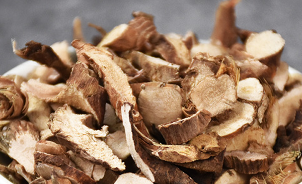
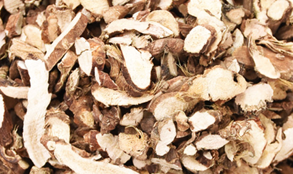
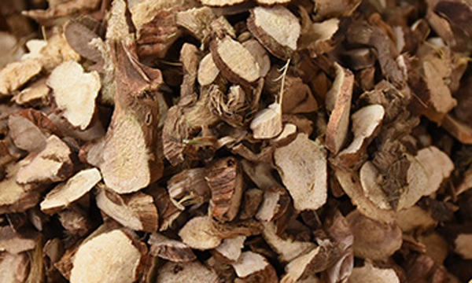

石菖蒲属于开窍药，它的功效很全面，具有理气、活血、去湿、散风、开窍等功效，对皮肤病、消化、心血管系统疾病都有着很好的效果，下面中药大全小编和大家具体来了解下石菖蒲的功效与作用。
1、祛痰开窍
石菖蒲可以化湿浊，它的气味芳香，也具有窍祛痰湿的功效，适用于清阳不升而引起的神识不清、耳聋目昏和精神迟钝等症状。
2、安神定志

石菖蒲对人体的中枢神经有抑制作用，因此它可以起到镇静安神的作用，对失眠的症状也有缓解作用，是解郁安神的一剂良药。临床上对于精神病患者有镇静和催眠的作用。
3、醒脾开胃
石菖蒲里面的挥发油气味芳香，可以促进消化页分泌，抑制异常发酵，因此，它具有醒脾、胃助运化，用适合于治湿困脾胃的症状。
4、解痉治痛

石菖蒲的味辛、微温，它能够缓解肠管平滑肌痉挛、醒稗和胃，具有镇静的作用，故能用冶腹痛症。对于急慢性胃炎、胃神经官能症、胃及十二指肠溃疡等所致的腹痛，有很好的和中辟浊、醒脾开胃、理气止痛的作用。
5、芳香辟浊
石菖蒲的气味芳香，能辟秽化浊，具有解毒驱邪、芳香辟浊、解毒驱邪的功效，是古人预防疾病的常用药。古人用它来预防瘟疫，现在一些老人也会用此方法来预防疾病。
6、活血、缓解关节疼痛
石菖蒲能理气活血、祛风宣湿，适用于风湿痹阻、关节肿痛、跌打损伤之瘀肿疼痛等症状，可以消肿止痛，对于关节疼的人，将石菖蒲捣烂加适量的白酒，放炒锅家人，敷在患处效果很好。
1、消化系统的作用
石菖蒲能促进消化液的分泌、制止胃肠异常发酵，并有缓解肠管平滑肌痉挛的作用。它里面含有的细辛醚能对抗氯化钡引起的离体肠管的兴奋作用。
2、消炎抗菌的作用

石菖度在皮肤病上也有很好的效果，对各种癣菌有着不同程度的作用，用菖蒲水浸剂1：3的比例使用，对皮肤癣菌有好的消炎抗菌作用。
3、心血管系统的作用
石菖蒲挥发油(β-细辛醚)在一定浓度下有使豚鼠冠状血管扩张的作用。临床常用于冠心病、肺心病等属于痰浊气滞之胸痹者的治疗，其机制可能与其能增加冠脉流量有关，还可能与镇静、改善消化机能、平喘、镇咳等作用有关。
中药大全小编还是那句话是要三分毒，石菖蒲挥发油中主要含细辛醚、石竹烯、石菖醚等，主要兴奋脊髓神经。
石菖蒲的副作用主要表现在中毒反应，如有抽搐、惊厥等症状，立即采取解救措施，一面外界刺激可诱发和加剧，最后死于强直性惊厥。
解救措施：催吐、导泻、洗胃。静脉输液。皮下注射麻黄碱。对症治疗。
阴虚阳亢、烦躁汗多、咳嗽、吐血、精滑者慎用。
以上为石菖蒲的功效与作用的全部内容，相信您已经对它的副作用及禁忌，以及过敏反应的对策都有所了解。